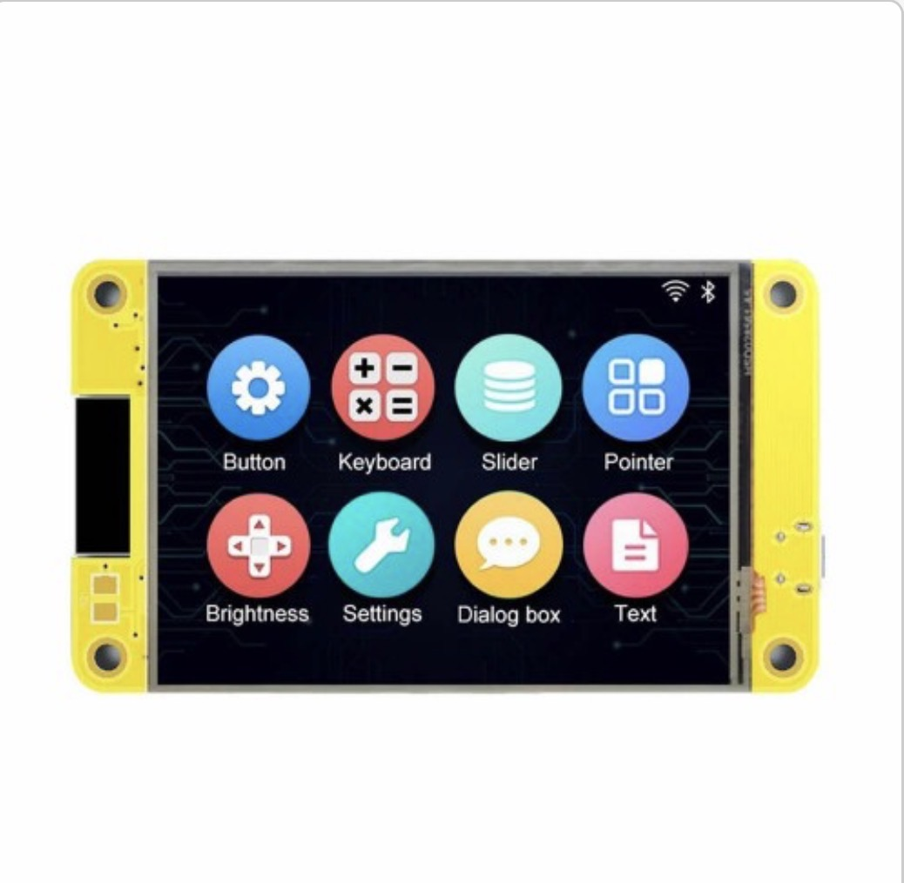
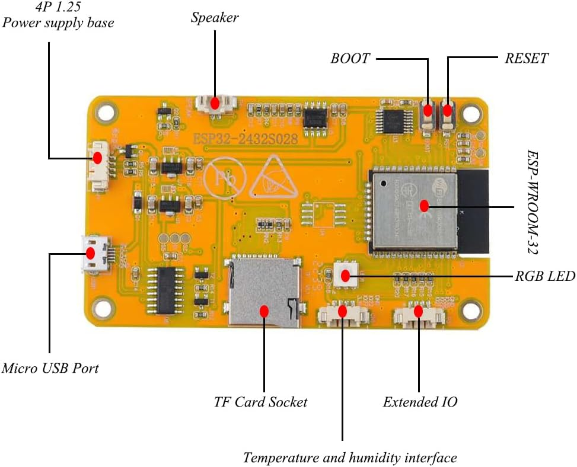

Hardware
ESP32-2432S028 / CYD


Confirm the module and display-controller markings on the board you received before flashing.
The supplied PlatformIO environment targets the common ESP32-2432S028R 2.8-inch Cheap Yellow Display (CYD): the original ESP32 module marked ESP-32S, a 240 × 320 portrait ILI9341 display, and an XPT2046 resistive touch controller.
Compatible board
This firmware is for the standard resistive-touch board. It supports original micro-USB boards and compatible USB-C Rv2 boards only when they retain the ILI9341 display and XPT2046 touch wiring.
Capacitive-touch S028C, ESP32-S3, and ST7789-display variants need a different touch and/or display configuration.
Configured display pins
| Signal | GPIO |
|---|---|
| MOSI | 13 |
| MISO | 12 |
| SCLK | 14 |
| CS | 15 |
| DC | 2 |
| Reset | 4 |
| Backlight | 21 |
Touch wiring
The XPT2046 controller uses its own HSPI bus: CS 33, IRQ 36, SCLK 25, MISO 39, and MOSI 32. Touch uses the portrait mapping defined by the firmware.
Flash layout
The project uses a larger single application partition and has no OTA update path. Rates and preferences are stored locally in flash.